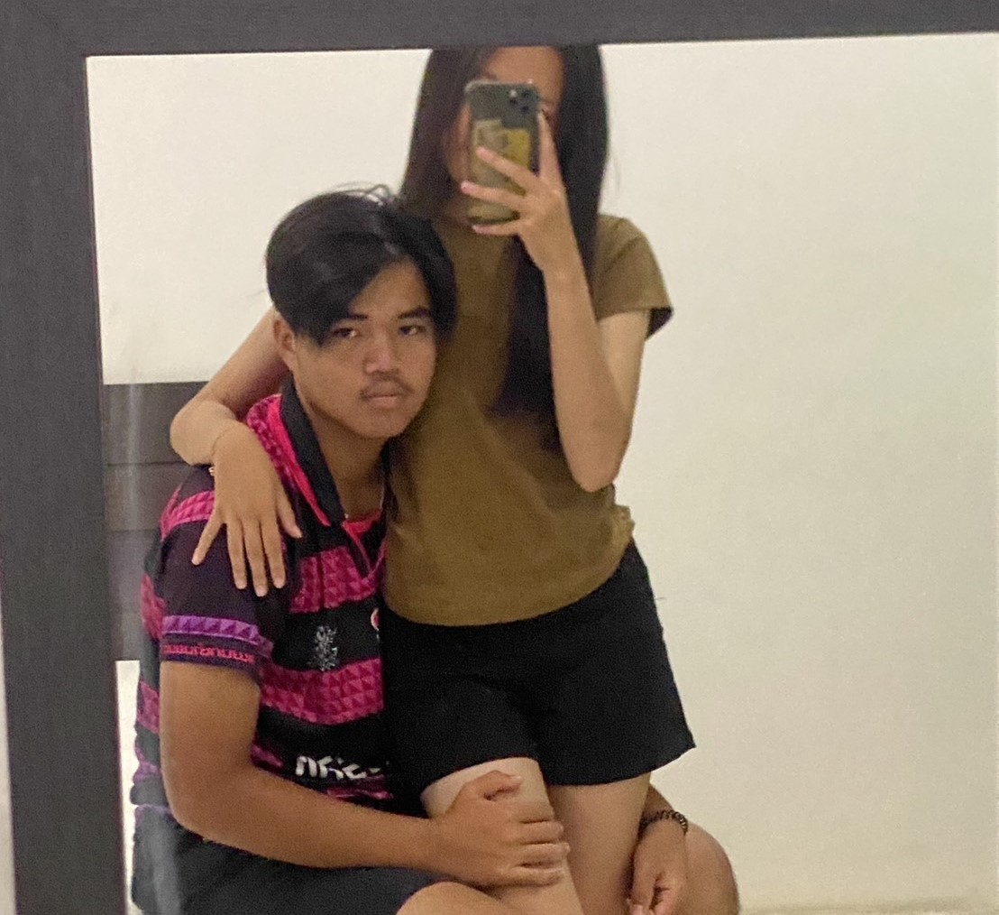
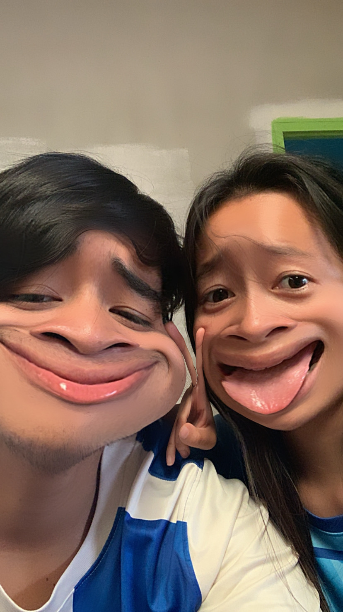
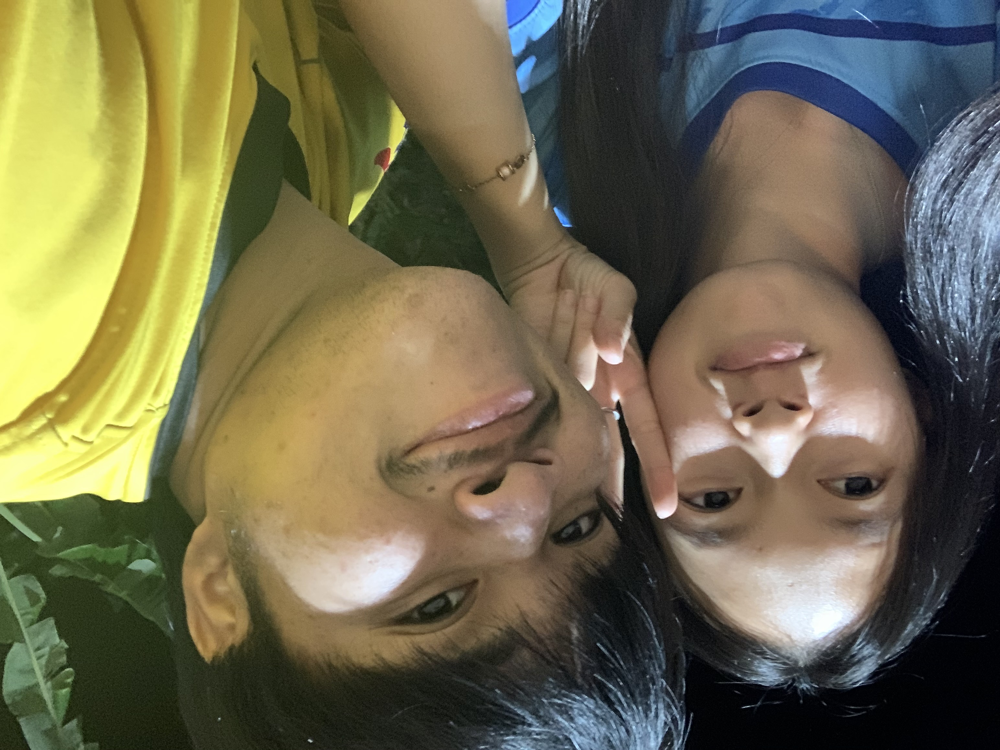
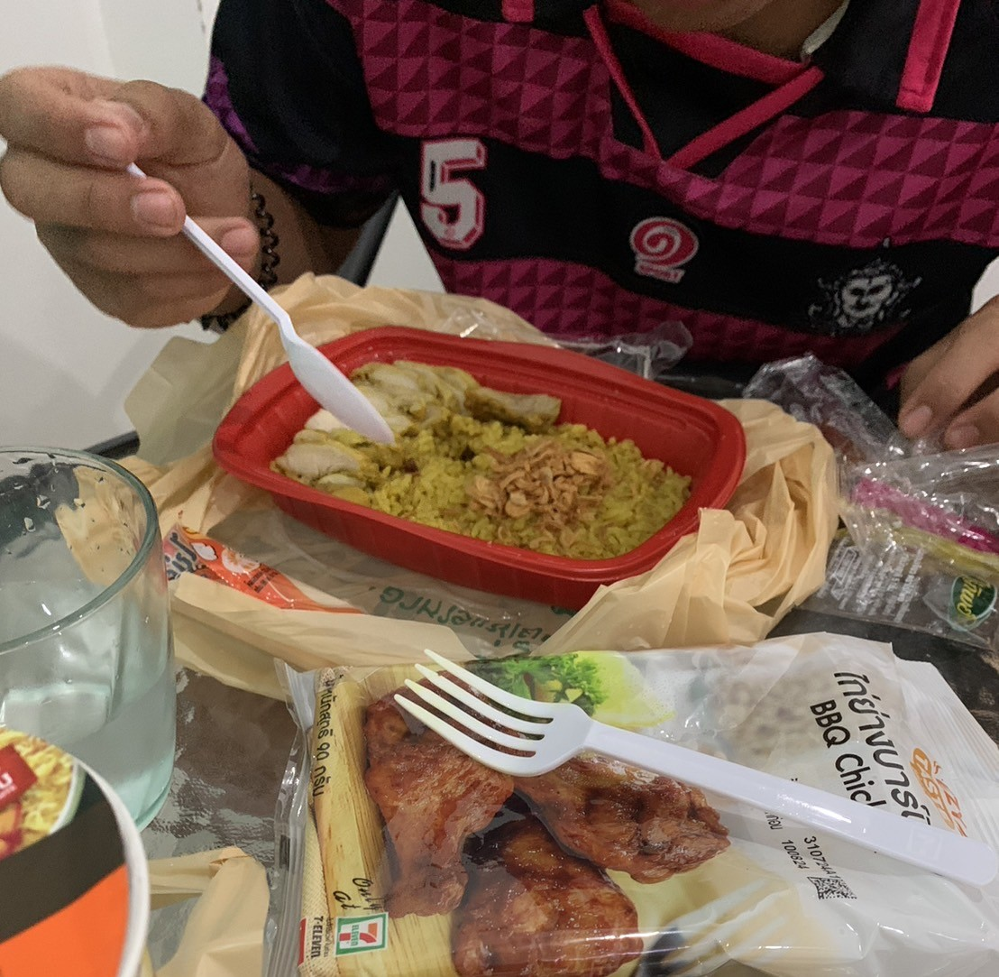
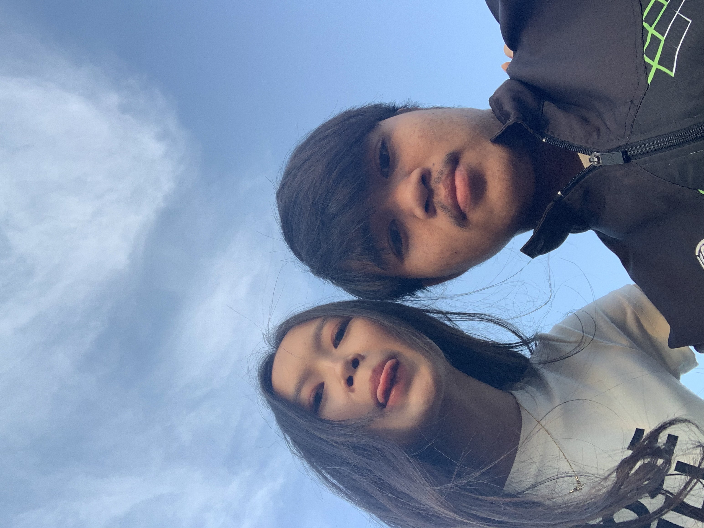
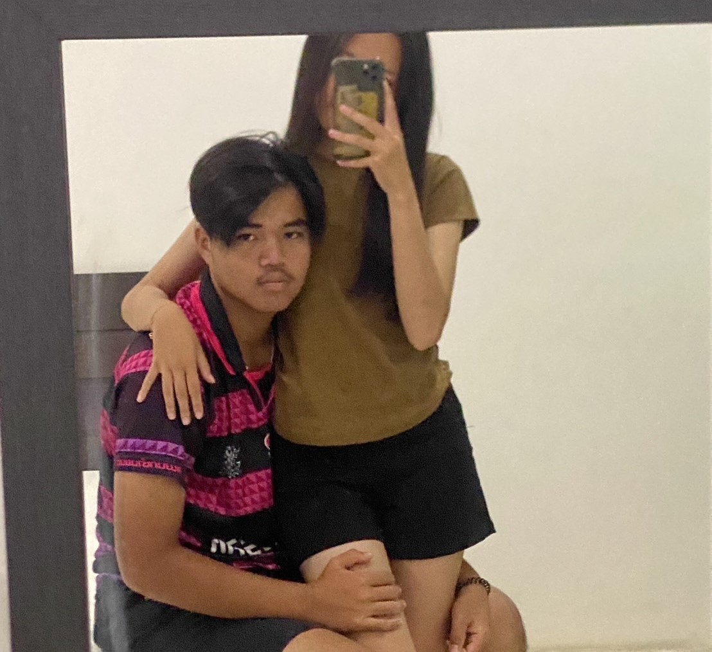
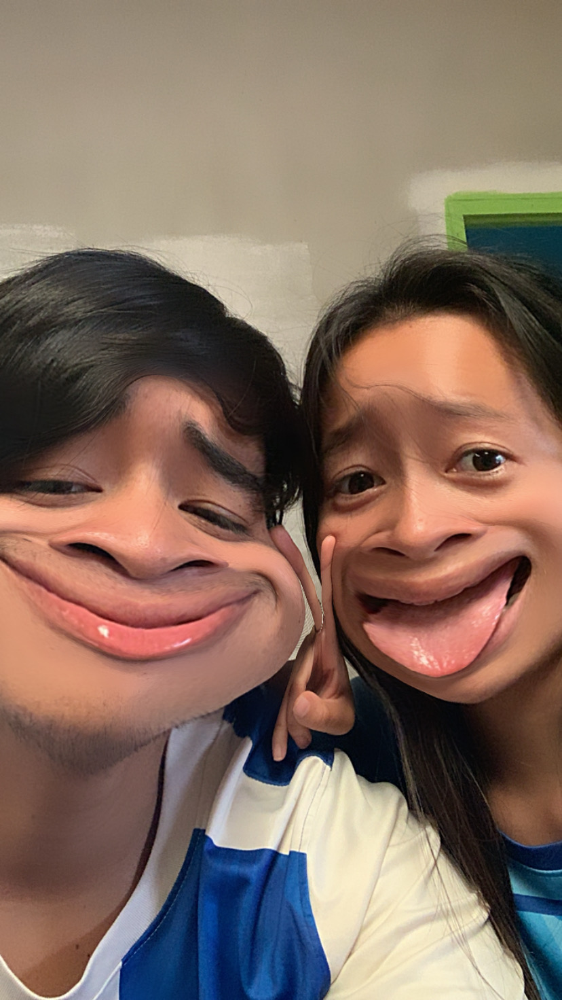
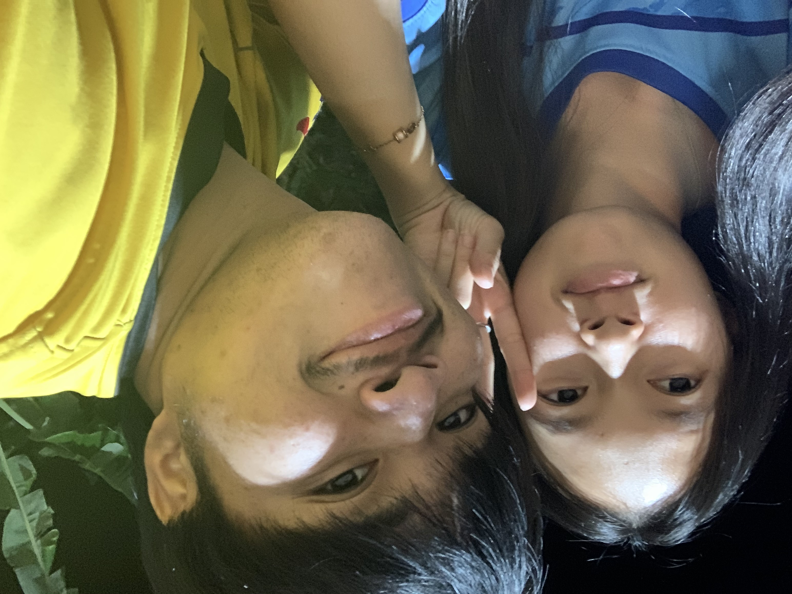
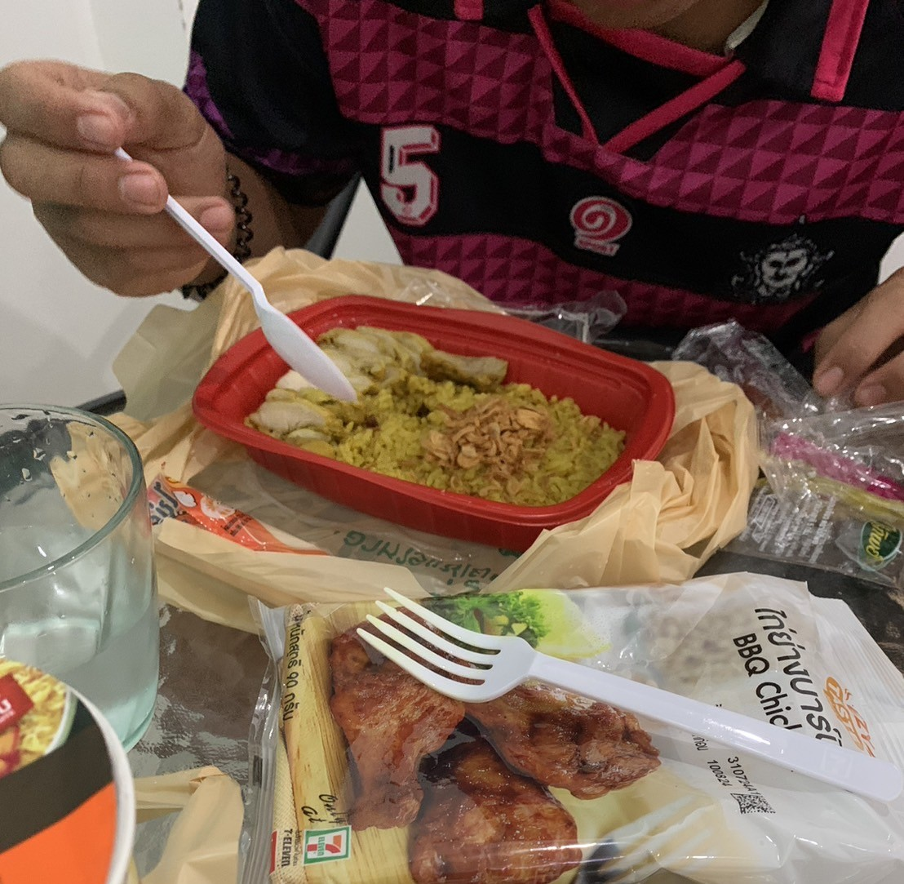
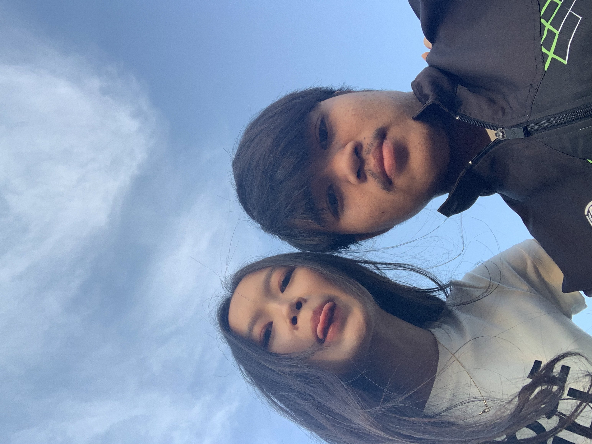

สุขสันต์วันครบรอบ 6 เดือน!💜
วันที่พิเศษ: 12 ของทุกเดือนน
จ๊ะเอ๋!! คิมคนหล่อของออม(ออมสิน)อยู่ด้วยกันมา6เดือนแล้วเนอะดีใจมากมากเลยที่ได้เจอคิมขอบคุณนะที่ทักมาวันนั้นจนได้เป็นแฟนกัน คิมเป็นเป็นคนที่ ออมเคยตั้งสเปคไว้เลยเคยบอกแล้วไม่รู้คิมจำได้มั้ย สูงหล่อทรงเข้มหนวดคิ้วยิ้มก็น่ารัก เล่นกีต้าร์ก็เป็นร้องเพลงก็ได้ฟุตบอลก็เตะ มากกว่านั้นคือเป็นคนที่เอาใจใส่ดูแลเก่งมากกก ง้อก็เก่งออมนอยคิมไได้ไม่ถึง10นาที คิมก็มีวิธีง้อ คนอะไรจะน่ารักขนาดนี้แฟนออมเองงงง ไม่เคยมีเรื่องผู้หญิงให้ปวดหัวเลยยย เป็นคนที่อยู่ด้วยแล้วอบอุ่นมากเอาดี อ้อนเก่งมากละออมกับคิมเป็นคนที่ติดสกินชิพอ่ะฮือพิมพ์ไปก็จะร้องคิดถึงอยากกอดด คนอะไรอบอุ่นแท้ ออมฟ้องไรนิดหน่อยโอ๋เก่งเกิน ดูแลเก่งมากนะเอาดี ครีมก็ทาให้ผมก็สระให้ลเล็บก็ตัดให้ ผ้าก็ซักให้ขอบคุณครอบครัวคิมที่สอนคิมมาเป็นอย่างดี ช่วงจะเข้า6เดือนทะเลาะบ่อยอยู่นะ ไม่ว่าใครจะผิดจะถูกขอโทษกันทั้งคู่ได้มั้ย ตอนอยู่ด้วยกันทุกอย่างคุยง่ายมากแต่ห่างกันต่างคนต่างเอาชนะอ่ะไม่รู้จะพูดไงแต่ อย่าทะเลาะข้ามคืนได้มั้ย🥺 ขอบคุณนะคะดูแลออมดีขนาดนี้ ออมก็เต็มที่กับคิมมากเหมือนกันน อยู่ด้วยไปนานนานเน้อ นิดหน่อยก็อภัยให้กันนะ ขอบคุณที่ตามใจเก่งมากอยากกินอะไรอยากไปไหนพาไปหมดเลย เสมอต้นเสมอปลายแบบนี้ไปเรื่อยเรื่อยน๊าาาาาาา🐾💜
ภาพความทรงจำของเรา.🫅🏻👸🏻
 









นับถอยหลังสู่วันครบรอบ
วาเลนไทน์💞💐
มีของให้ชิ้นเดียวคือนั่งเขียนเว็บให้ไม่รู้จะชอบมั้ยแต่ตั้งใจทำให้น๊าา ออมขอบคุณคิมนะคะ ขอบคุณสำหรับความรัก ความเอาใจใส่ และความอบอุ่นที่มอบให้ออม ขอให้ทุกวันของเรามีแต่รอยยิ้มความสุขและความทรงจำดีๆแบบนี้ตลอดไปนะคะ 💜